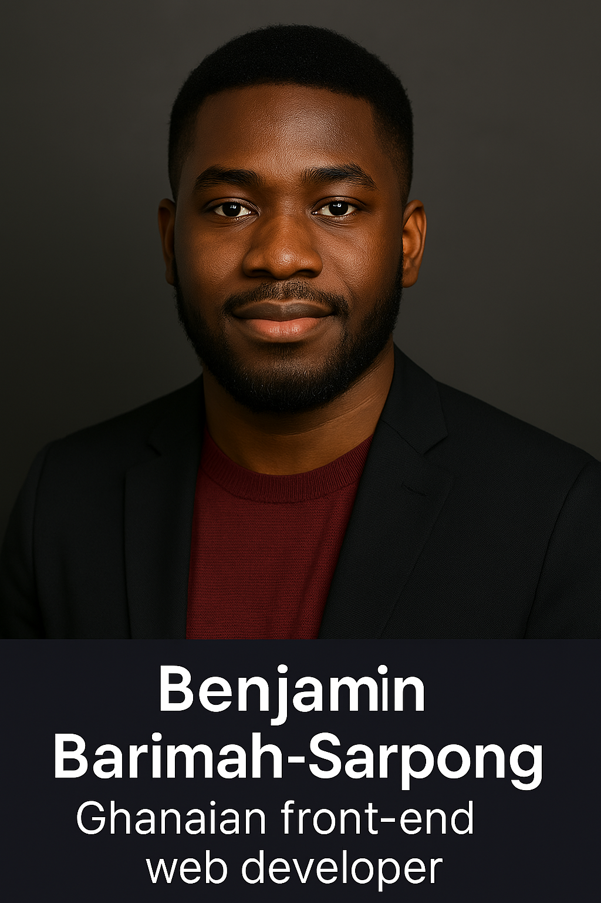
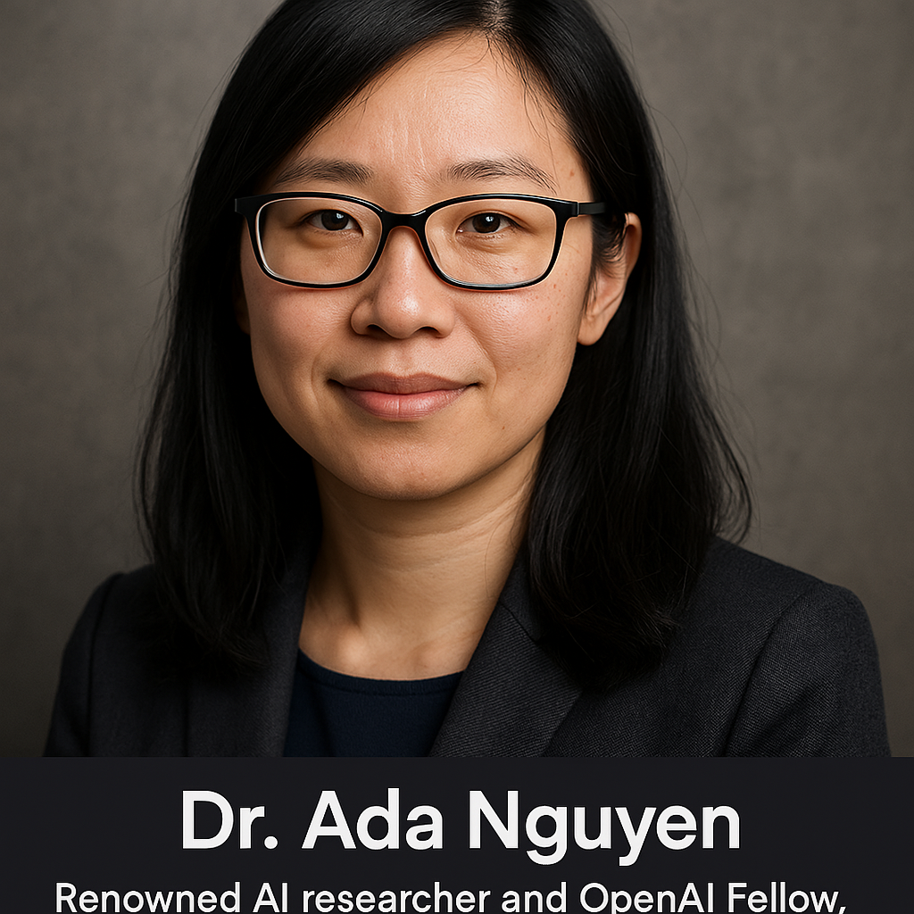

TechCon began in 2015 as a grassroots effort by a group of passionate developers who wanted to create
a space for collaboration, innovation, and the sharing of technical knowledge. Over the years, it has
grown into one of the most respected tech conferences worldwide, attracting thousands of attendees annually.
Founded in 2015 by a small group of tech enthusiasts
Originated as a local meetup for software engineers and open-source developers
Rapidly expanded into a globally recognized event within five years.
Known for its strong focus on innovation, developer collaboration, and cutting-edge technologies.
TechCon Conference 2015
Mission Statement
To create an inclusive platform where technologists, innovators, and creators connect and grow.
Encourage open dialogue on emerging tech trends such as AI, Web3, cybersecurity, and green tech.
Provide hands-on learning through workshops, hackathons, and live coding labs.
Promote diversity, equity, and accessibility in tech through community programs and scholarships.
Inspire the next generation of leaders to build a better digital future.
Notable Past Speakers

Benjamin Barimah-Sarpong
Bio
Benjamin Barimah-Sarpong is a Ghanaian front-end web developer known for building accessible,
performance-optimized user interfaces that blend design and function. With a passion for clean code and inclusive design,
Benjamin advocates for tech education and open-source collaboration across West Africa.
Contribution
Spearheaded mobile-first web initiatives for emerging markets in Africa, mentors junior developers through local tech hubs and online communities.

Dr. Ada Nguyen
Bio
A leading voice in ethical AI, Dr. Nguyen has developed responsible machine learning frameworks that are now standard in the healthcare and education sectors.
Contribution
Pioneered bias detecton models in AI systems and advocates for inclusive data ethics
Jordan Miles
Bio
As CTO of CloudForge, Jordan redefined how modern development teams deploy and scale microservices.
Contribution
Instrumental in promoting Infrastructure-as-Code and popularizing serverless architectures.
Sofia Reyes
Bio
Sofia is a cybersecurity strategist who has spoken at DEF CON and RSA Conference, known for uncovering vulnerabilities in widely-used IoT devices.
Contribution
Championed global cybersecurity literacy and led the development of an open-source encryption protocol for mobile devices.
Elijah Tanaka
Bio
Elijah heads the Quantum Web Project, researching how quantum entanglement can revolutionize internet communication.
Contribution
Built the first stable quantum protocol testbed integrated with traditional fiber-optic infrastructure.